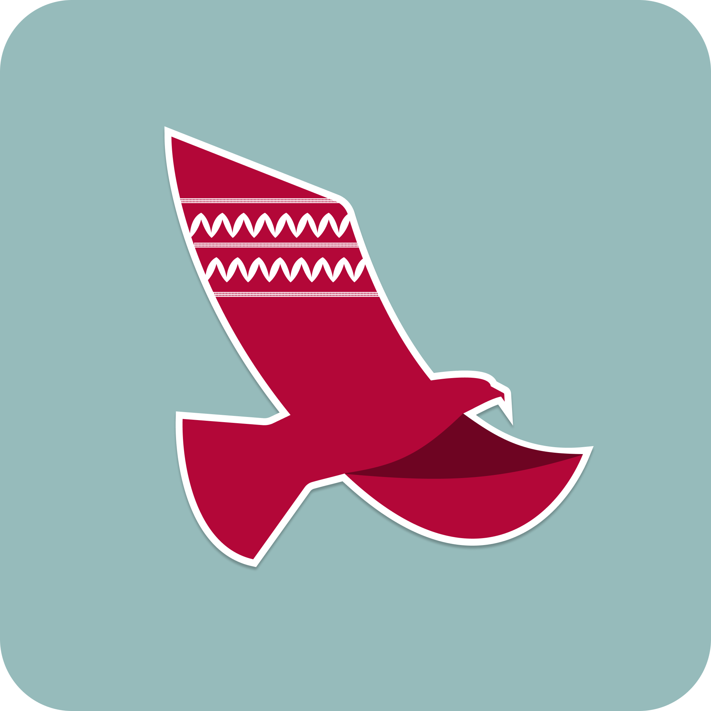

Grace Fujii
I'm studying how technology carries stories. Currently: AR for Indigenous cultural heritage and how community wealth shows up in STEM classrooms.
click a flower to wander
In progress · ACM CHI 2027
Thámien Ohlone AR Tour

An augmented reality tour overlaying Indigenous stories and histories onto the Santa Clara University campus and ancestral home of the Muwekma Ohlone. As Project Lead in SCU's HCI Lab and a Clare Boothe Luce Research Fellow, I'm running a mixed-methods study on different perspectives of AR experiences at contested sites.